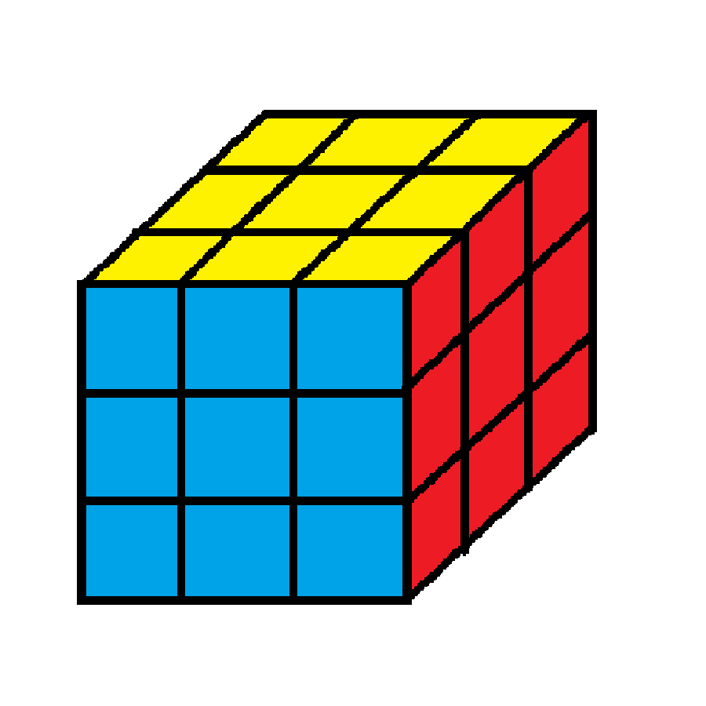

Rubik's cube Tutorial
Rubik's cube Tutorial
Advanced tip 1

Choose one colour for the base. Usually, white is the best to train. Then do the first side and first layer without flipping around the cube. It can help you save the cube flipping time and increase the speed. If you do lots of practice, you can solve a Rubik's cube in 1 minute.
Advanced tip 2

Use a higher tolerance cube allows you to play the cube faster and smoother. It is worth to upgrade your cube and have better play experience.